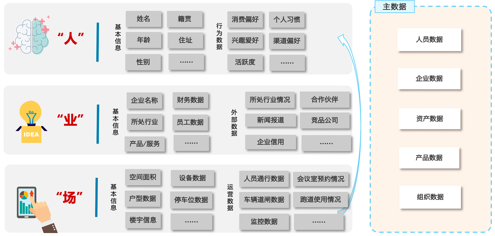
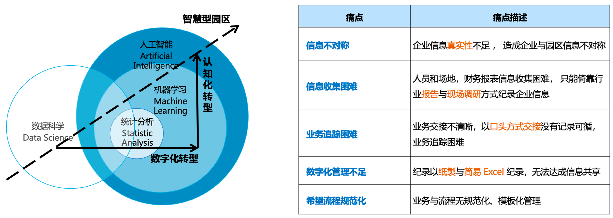
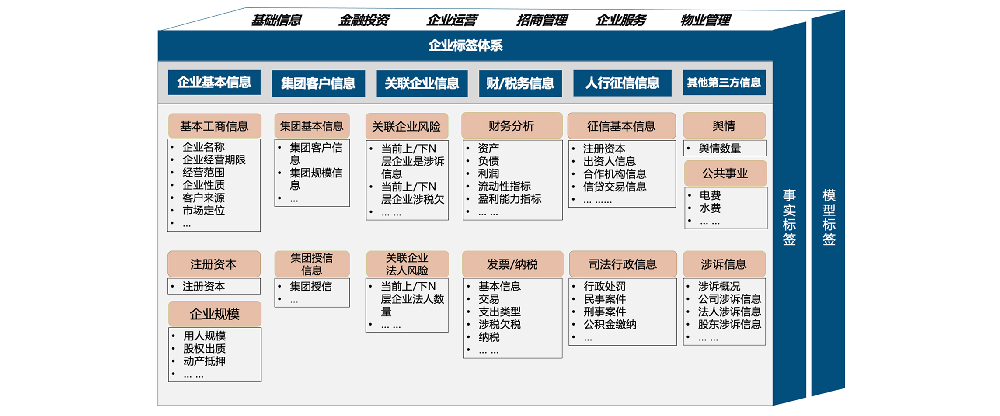
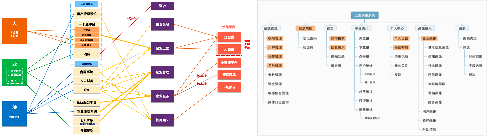
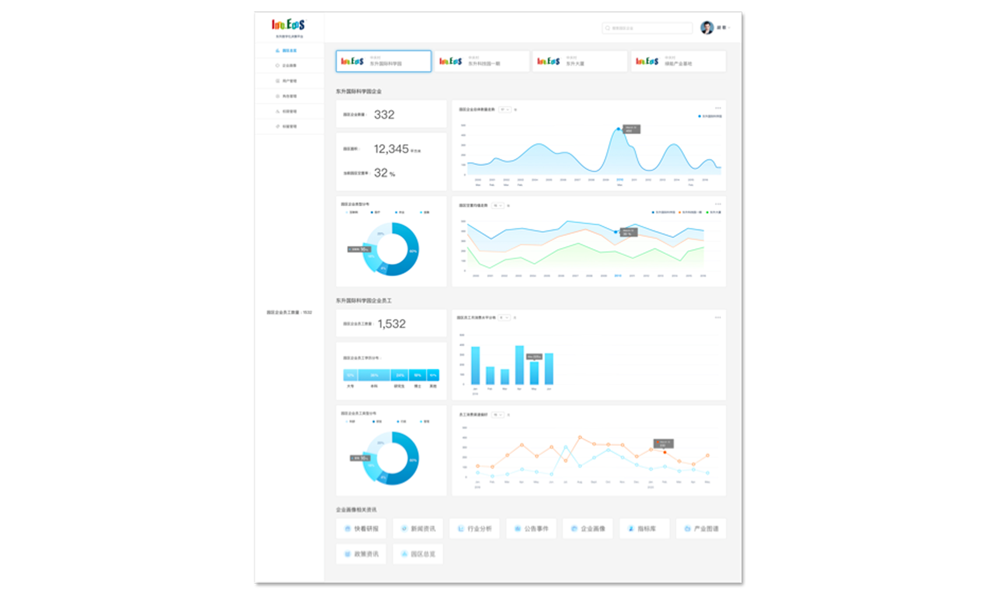

DongSheng Smart Park
Operational Decision Platform
Architecting a data-driven ecosystem (People, Business, Place) to transition from asset management to intelligent decision intelligence.
My Role
DTW Facilitator, Strategic Definition
Project Scope
Smart Park Management Consulting,Park Business Overview,Label Decision-Making Platform
Phase 1: Discovery & The 3D Framework
In the initial phase, we audited the existing data landscape of DongSheng BoZhan through the "People, Business, and Place" dimensions. The vision was to break manual constraints and transition from a "Traditional" asset manager to an "Intelligent" operator.

- Traditional: Dependency on paper records and isolated spreadsheets.
- Digital: Realizing systematic data recording and process automation.
- Intelligent: Enabling smart risk control, digital marketing, and persona-driven services.
Phase 2: Stakeholder Alignment & Data Audit
We facilitated Design Thinking Workshops (DTW) to map the User Journey across property, marketing, and investment teams. This stage involved a deep Data Inventory to summarize the complex relationships between legacy systems and information gaps.

Consolidating fragmented property, tenant, and industry data into a unified "Knowledge Graph" foundation.
Addressing issues of high information redundancy, single external channels, and stagnant company records.
Phase 3: Label Architecture & Graph Construction
Action 1 & 2: We architected the 7-Dimension Enterprise Labeling System. This involves constructing a "Digital Twin" for every enterprise, utilizing Knowledge Graphs to discover hidden relationships and business opportunities.

- Basic Info: Business scope, registration details, and operational status.
- Group/Affiliates: Tracking corporate hierarchy and scale of affiliate groups.
- Risk Control: Monitoring legal disputes, tax arrears, and associated credit risks.
- Financial Status: Deep analysis of assets, liabilities, and profitability indicators.
- Credit & Sentiment: Real-time integration of public opinion and credit history.
- Knowledge Graph: Mapping the "Vitality" of enterprises through synchronized market data.
Phase 4: Functional Structure & Operational Empowerment
Action 3: The final Digital Operation Platform Structure ensures that all departments can extract synchronized data to refine strategies. This transforms the park into a proactive service incubator.


- Property Management: IoT-driven spatial management and facility record automation.
- Investment & Services: Pre-investment risk evaluation and precise talent/subsidy matching.
- Recruitment: Identifying high-potential startups through industry cluster analysis.
- Dynamic Monitoring: Real-time alerts for significant news or changes in company status.
Full Case Study
Download the detailed PDF version for more technical insights and methodology details.